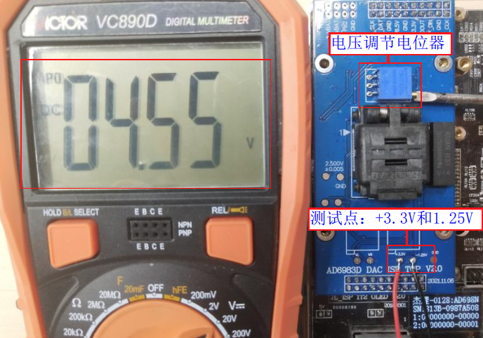

1.11. 其它常见功能配置和使用说明
1.11.1. flash的SPI参数配置
如要把isd_config.ini同级目录下的文件“file1.bin”，”file2.bin”等一个或者多个文件通过烧录器烧录到芯片flash指定位置,数据供SDK使用
请参考《flash的SPI参数配置》
1.11.2. 自定义资源文件烧录
如要把isd_config.ini同级目录下的文件“file1.bin”，”file2.bin”等一个或者多个文件通过烧录器烧录到芯片flash指定位置,数据供SDK使用
请参考《自定义资源文件烧录配置》
1.11.3. flash参数烧录和保护参数生效测试配置
如要芯片flash指定地址区域要带数据保护功能，可以通过下载目录的isd_config.ini文件配置flash写保护功能，烧录器把保护参数写到flash，供SDK配置flash写保护功能
请参考《flash参数烧录和保护参数生效测试配置》
1.11.4. 无ldo和带ldo的上层板烧录
一拖二烧录器支持上层烧录板带LDO转换电路即6.5V转4.2V,5V等电压进行烧录，
也支持不带LDO转换电路进行烧录(节省物料)，即烧录器直接输出对应型号芯片正常烧录需要的电压
上层板烧录接线请参考《芯片烧录接线和供电说明》
Note
烧录座带LDO转换电路是因为以前考虑部分未校准的芯片会流到客户手中，导致芯片需要烧录器进行校准；或者部分芯片的efuse烧录需要6.5V，3.3V等特定电压；
当前的烧录器带有芯片校准检测功能，如果芯片未校准烧录会报错！并且efuse对应的key，lvd等烧录不再需要特定电压；
所以，烧录座可以去掉LDO电路，做成芯片最小系统样式进行烧录！这样烧录座更简单，既可以省物料又可以做成通用烧录座！
1.11.5. 芯片性能测试
烧录器在烧录芯片的同时，会对芯片各个模块进行性能测试。部署fw烧录文件时，
一拖二烧录器部署参考《部署目标芯片程序到烧录器》，
会有配置选项对芯片筛选测试项进行配置，正常情况默认配置即可，也可以根据客户实际生产情况进行配置。
各个筛选配置项说明参考 《各型号芯片常用配置项介绍》
1.11.6. 芯片软关机功耗测试
一拖二烧录器自带功耗测试功能，如AC696X支持软关机功耗测试功能，使用方式如下：
Note
1.对“功耗测试(uA):xxx”配置项进行配置；
2.默认关闭测试：选择 OFF,不对芯片进行软关机功耗测试；
3.开启测试：输入具体数值，如输入“10”，对芯片进行软关机功耗测试,芯片功能实测值大于10uA烧录报错当不良片处理；
4.注意：
（1）功耗测试烧录座不需要带LDO转换电路,如带ldo转换电路，请不要勾选；
（2）卡值请留点余量，如要筛选大于2uA的芯片，请设置5uA以
对应芯片型号如需功耗测试功能请联系杰理工程师 ！
1.11.7. 烧录时间优化提升
烧录时间提升方法有:
1.勾选部署fw文件的配置项中的空片烧录,勾选空片烧录配置项，将省去读整片芯片flash进行校验是否为空的流程
2.如果量测芯片长期无生产质量问题，可以把不必要的芯片筛选测试项关闭，只烧录程序烧录速度会大大提升
1.11.8. 通过RS232串口控制蓝牙地址烧录
1.烧录器V2.27.9版本固件，可使用RS232串口通过“PC蓝牙地址烧录工具”控制烧录器烧录蓝牙地址，防止蓝牙地址出现重复和掉失情况，方便对蓝牙地址数据的管控；
2.该功能，PC “配置”界面需要勾选 “串口控制烧录”，并使用RS232串口线连接“PC蓝牙地址烧录工具”和烧录器；
3.该功能，需要使用客户自己的数据库管理蓝牙地址，烧录从数据库拿地址进行烧录
4.该功能当前仅支持AC695X、AC635N、AC6083、AE695N、AC632N、AE632N芯片型号，其它型号有需要，可以联系杰理技术支持；
1.11.9. 通过串口打印烧录信息
1.目的：收集量产烧录信息，方便生产管理
2.当前支持打印的烧录信息
固件版本 |
fw程序文件校验码 |
芯片型号 |
芯片版本 |
flash id |
授权次数 |
烧录成功/失败次数 |
烧录时间 |
错误码及报错信息 |
|---|---|---|---|---|---|---|---|---|
burn_ver,V2.27.8 |
fw_crc,7C35-CE54BED6 |
chip_name,AD15N |
chip_ver,B |
flash_id,0x5e3213 |
auth_times,0,used_times,0 |
pass_times,16,fail_times,8 |
burn_time,2095 |
burn_pass[1],E00-burn_ok |
3.串口硬件接线
烧录器“调试串口TX” 接 “串口模块RX”，“烧录器调试串口GND”接“串口模块GND”，如下图所示。

3.上位机串口配置

建议使用稳定性较好，且能过滤杂波的上位机串口助手
4.保存log信息为.csv文件进行分析
可以将串口助手收集到的log保存为.csv文件，进行数据分析处理
1.11.10. 烧录器9V电源焊接线
当烧录器内置时，焊接外拉线外置让产线方便在产生问题时复位，接线如图所示。

1.11.11. 单独擦除芯片flash功能
任意fw文件对应的下载目录的isd_config.ini文件进行如下配置，配置后点击下载目录的download.bat生成新的fw文件；
[BURNER_PASSTHROUGH_CFG]
ERASE_FLASH_MODE=YES;
把上述的fw文件部署到烧录器；
任意一种烧录模式，校验模式，查空模式下，按
开始按键，即可实现单独对芯片进行擦除，擦除后校验整片flash数据是否是全FF,显示屏成功计数累加1表示擦除成功；
1.11.12. AD698N/AC638N DAC OS测试
1.11.12.1. 测试说明
DAC OS测试为一拖二烧录器的一个筛选测试项，主要用于筛选芯片DAC二极管特性异常的芯片；
DAC OS测试，需要上层板上带有DAC OS测试电路，并在使用前需要对上层板的“电压基准源进行校准”；
烧录报错提示情况
E06_DAC_OS_ERR: 为DAC OS测试不过芯片，需要筛选出来进一步分析；
E06_OS_INIT_ERR: DAC模块初始化异常，请重试，多次烧录报错请检查硬件电路；
1.11.12.2. 操作步骤
DAC OS上层板基准源调节
【1】远程升级支持DAC OS测试的烧录器固件，烧录器固件版本为V2.25.5及以上版本；
【2】更新芯片程序fw文件时，在烧录配置项中勾选“DAC OS”测试项；
【3】把带有支持DAC OS测试电路的上层板安装到烧录器；
【4】对烧录器上电开机；
【5】使用万用表量取支持DAC OS测试的上层板测试点+3.3V和测试点-1.25V两点间电压，并调节电位器使万用表测量电压达到4.55V;至此完成DAC OS上层板基准源调节，如DAC OS上层板基准源调节所示。
Important
步骤【3】和步骤【4】一定不能颠倒过来操作

DAC OS上层板基准源调节
走正常烧录、校验、查空流程，即可实现芯片烧录、校验、查空兼DAC OS测试。